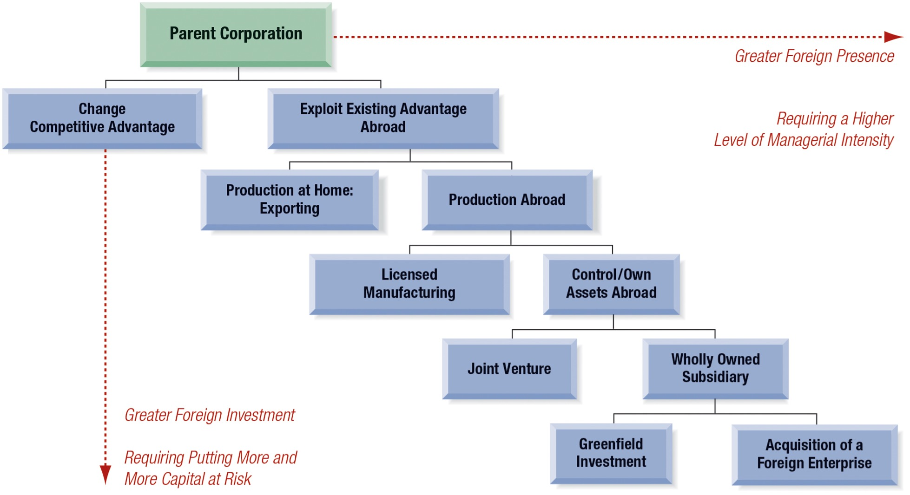

Chapter 17 - Foreign Direct Investment and Political Risk
Foreign Direct Investment and Political Risk
Introduction
Random Quote: “In Omnia Paratus” - Latin for “Ready for Anything”
Another Random Quote: ” Never confuse education with intelligence, you can have a PhD and still be an idiot.” - Richard Feynman
Scripture: “For what does it profit a man if he should gain the whole world and lose his own soul? Or what will a man give in exchange for his soul?” - Matthew 16:26
Textbook Quote: “In this world, shipmates, Sin that pays its way can travel freely, and without passport; whereas Virtue, if a pauper, is stopped at all frontiers.” - Herman Melville, Moby Dick, Chapter 9, “The Sermon,” 1851
Quote from the first paragraph of the chapter: “A multinational firm investing in other countries is executing its corporate strategy with foreign direct investment (FDI).”
Chapter 17 asks a practical strategic question: why do firms invest directly in foreign countries rather than simply export, license, or stay home? The answer is never purely financial and never purely strategic. A multinational enterprise (MNE) must possess an advantage worth taking abroad, must find a location where that advantage can be exploited, and must decide that controlling the activity itself is better than relying on outside parties.
This chapter therefore ties together strategy, finance, organizational structure, and political risk. The first half of the chapter explains how firms choose foreign direct investment and how they choose entry structures. The second half explains why political risk is unavoidable once capital is committed abroad, how that risk affects profitability, cash flow, and asset ownership, and how firms attempt to reduce those exposures before and after investing.
A useful way to think about the entire chapter is this:
- FDI is a strategic choice because the firm is deciding how to compete internationally.
- FDI is a financial choice because it commits capital under uncertainty and must earn an acceptable risk-adjusted return.
- FDI is a political choice because operating abroad exposes the firm to host-country governments, regulation, and instability.
Chapter Roadmap
Major sections:
- The Foreign Direct Investment Decision - why firms choose direct investment and how the OLI paradigm organizes that decision.
- Structural Choices for Foreign Market Entry - how firms choose markets and entry forms such as exporting, licensing, joint ventures, acquisitions, and wholly owned subsidiaries.
- Political Risk: Definition and Classification - how political risks are categorized at the firm, country, and global levels.
- Financial Impacts of Political Risk - how political interference affects operating profits, cash flows, and asset ownership.
- Political Risk Mitigation - how multinationals use contracts, partners, financing structures, insurance, and dispute resolution to reduce exposure.
17.1 The Foreign Direct Investment Decision
Foreign direct investment is not just “investing abroad” in the loose sense of buying foreign securities. It is a strategic commitment of capital and managerial control in another country. The firm is not merely seeking a return on a portfolio asset; it is seeking to own, control, and operate productive assets abroad.
The chapter’s organizing framework for this decision is the OLI Paradigm, which explains why an MNE chooses FDI rather than alternative forms such as exporting or licensing. The three conditions are:
- O = ownership advantages
- L = location advantages
- I = internationalization advantages
The central logic is demanding. A firm should not invest abroad simply because a foreign market exists. It should invest abroad only if it has an advantage worth transferring, can find a location that helps it exploit that advantage, and expects greater value from controlling the activity itself.
Firms often become multinationals because they are seeking one or more of the following:
- markets - more consumers and sales opportunities,
- raw materials - access to oil, minerals, or other inputs,
- production efficiency - lower-cost but capable labor or production conditions,
- knowledge - access to specialized human capital, technology, or research clusters,
- political safety - jurisdictions offering more secure treatment of private capital.
17.1.1 Ownership Advantages
Ownership advantages are the firm-specific strengths that make international expansion plausible in the first place. If the firm does not possess a sustainable competitive advantage at home, there is little reason to expect success abroad.
The chapter stresses that ownership advantages must have three characteristics:
- they must be firm-specific;
- they must be not easily copied;
- they must be transferable abroad.
That last point is crucial. A firm may be successful at home for reasons that do not travel well. A protected domestic position, political favoritism, or simple scale alone may not be enough. The advantage must be something the firm can actually deploy in another market.
Examples of ownership advantages include:
- patented technology,
- managerial expertise,
- recognized brands,
- marketing know-how,
- product differentiation,
- organizational capabilities,
- financial strength,
- a strong home-market competitive environment that sharpened the firm’s skills.
Important: not everything that looks like an advantage qualifies. Economies of scale and financial strength are useful, but by themselves they are not always truly firm-specific because other firms may also achieve them. Similarly, some technologies can be purchased, licensed, or imitated. For that reason, the most valuable ownership advantages tend to be those that combine technical knowledge, brand identity, human capital, and organizational routines in a way that is difficult to replicate.
A short way to say it is this: the best ownership advantages are unique, durable, and mobile.
Why the home market still matters. Firms are often made more competitive by being forced to compete in a demanding domestic environment. Sophisticated customers, strong local rivalry, capable suppliers, and related industries can all sharpen performance. A weak home market may feel comfortable, but it often does not prepare firms for global competition.
17.1.2 Location Advantages
Location advantages are the reasons a particular foreign market is attractive enough to justify investment there rather than somewhere else. These advantages are usually tied either to market imperfections or to genuine comparative advantage in the host country.
Examples given in the chapter include:
- a low-cost but productive labor force,
- unique sources of raw materials,
- a large domestic market,
- defensive investments to counter competitors,
- centers of technological excellence.
This means that even a very strong firm does not invest everywhere. It invests where the specific characteristics of the foreign location make the transfer of its competitive advantage worthwhile.
For example:
- A manufacturer may invest in a country with low labor costs and acceptable productivity.
- A mining or petroleum firm may invest where the natural resource physically exists.
- A consumer products firm may invest in a country with a very large domestic customer base.
- A technology firm may invest where there is a cluster of technical talent and research capability.
- A firm may also invest defensively to prevent competitors from capturing strategically important markets first.
In short, location advantages answer the question: why this country?
17.1.3 Internationalization Advantages
Internationalization advantages explain why a firm chooses to control the activity itself rather than rely on licensing, outsourcing, or some other contractual arrangement.
According to the chapter, a key element of internationalization is the protection and deployment of proprietary information and the human capital capable of generating new information. Large research-intensive firms often fit this pattern especially well.
The financial logic is equally important. internationalization reduces a variety of transaction and agency costs that arise when outside parties are involved. If the MNE already has access to capital at favorable terms, has superior monitoring ability, and possesses valuable proprietary knowledge, it may be inefficient to share returns with:
- licensees,
- distributors,
- joint venture partners,
- local banks,
- unrelated suppliers.
Wholly owned FDI can therefore reduce problems caused by:
- asymmetric information,
- lack of trust,
- contractual incompleteness,
- monitoring costs,
- differences in cost of capital.
This is why the chapter argues that a successful internationalization strategy often depends on minimizing transaction costs and preserving control over knowledge, financing, and the value chain.
17.1.4 The Financial Strategy
The text links financial strategy directly to the OLI framework and distinguishes between proactive and reactive financial strategies.
Proactive financial strategies. These are deliberate strategies that the MNE can formulate in advance in support of its ownership, location, and internationalization advantages. They include:
- competitive sourcing of capital globally,
- strategic cross-listing,
- accounting and disclosure transparency,
- maintaining financial relationships,
- maintaining a competitive credit rating,
- negotiating tax and financial subsidies,
- reducing agency costs through FDI.
The common idea is that finance is not a passive support function. It can help create and sustain competitive advantage by lowering capital costs, broadening access to funding, strengthening credibility, and improving free cash flow.
Reactive financial strategies. Reactive strategies arise after the firm discovers or confronts market imperfections. These include:
- exploiting exchange rate misalignments,
- exploiting stock price misalignments,
- reacting to capital controls,
- minimizing worldwide taxation.
These are “reactive” because they depend on conditions encountered in markets rather than purely on plans laid out beforehand.
Exhibit 17.1 Finance Factors and the OLI Paradigm
| OLI Dimension | Proactive Financial Strategies | Reactive Financial Strategies |
|---|---|---|
| Ownership Advantages | Competitive sourcing of capital globally; strategic cross-listing; accounting and disclosure transparency; maintaining financial relationships; maintaining a competitive credit rating | Exploiting exchange rates; exploiting stock prices; reacting to capital controls; minimizing taxation |
| Location Advantages | Competitive sourcing of capital globally; maintaining a competitive credit rating; negotiating tax and financial subsidies | Exploiting exchange rates; exploiting stock prices; reacting to capital controls; minimizing taxation |
| Internationalization Advantages | Maintaining a competitive credit rating; reducing agency costs through FDI | Minimizing taxation |
The important takeaway is that finance both supports the initial FDI decision and shapes how the firm operates once abroad.
17.2 Structural Choices for Foreign Market Entry
Once the firm decides that FDI or foreign expansion is desirable, the next questions are:
- Which market should be entered?
- How should the firm enter it?
These choices are tightly connected. Market choice influences risk, and entry structure influences both expected return and exposure to political interference. In general, the deeper the desired market penetration and the higher the expected return, the greater the capital commitment and the greater the potential risk.
17.2.1 Selecting Target Markets
In theory, an MNE could search globally until it finds the country in which it expects the highest acceptable risk-adjusted return. In practice, firms rarely behave as if they are carrying out a perfectly rational global optimization exercise. Instead, they often proceed sequentially, learning from early investments and adjusting over time.
The chapter explains this using two behavioral perspectives.
17.2.1.1 The Behavioral Approach to FDI
The behavioral approach is closely associated with the Swedish School. It emphasizes that firms often invest first in countries that are not too distant in psychic terms. Psychic distance refers to similarity in culture, law, institutions, and business practices.
For Swedish firms, early investments tended to go to countries such as:
- Norway,
- Denmark,
- Finland,
- Germany,
- the United Kingdom.
These countries were not identical to Sweden, but they were close enough to reduce uncertainty.
Two lessons follow:
- initial investments tend to be modest, which limits risk;
- as firms gain experience, they become willing to invest in countries that are more distant both psychically and financially.
This helps explain why first-time foreign investments often look cautious and why later investments may become larger and more ambitious.
17.2.1.2 MNEs in a Network Perspective
As MNEs grow, they become less like simple parent-subsidiary hierarchies and more like international networks. In the network perspective, each subsidiary is not merely an obedient branch. It is a node in a wider organizational, industrial, and country-level network.
This has several implications:
- control becomes less purely centralized and more decentralized;
- subsidiaries compete for capital and resources;
- subsidiaries are embedded in host-country supplier and customer networks;
- subsidiaries also belong to worldwide industry networks;
- strategic decisions are influenced by internal coalitions as well as external relationships.
The text even notes that the parent itself may evolve into a more transnational entity owned by investors from different countries. So the modern multinational is often better understood as a set of linked networks rather than a single-command pyramid.
17.2.2 Choosing Entry Structures
Entry structure determines who owns, who controls, who finances, and who bears risk. The chapter presents foreign expansion as a sequence of increasing commitment (and risk):
- exporting,
- licensed manufacturing or management contracts,
- joint ventures or affiliates,
- wholly owned subsidiaries,
- greenfield investments or acquisitions.

The sequence highlights a simple pattern: greater foreign presence requires more capital at risk and more managerial intensity.
17.2.2.1 Exporting versus Production Abroad
Exporting has several advantages:
- lower front-end investment,
- fewer political risks,
- fewer agency problems from monitoring foreign operating units,
- less commitment of management resources.
If a firm can serve foreign demand profitably through exports, this can be an attractive low-risk approach.
But exporting also has limitations:
- the firm’s presence in the market is shallower,
- imitators may enter,
- foreign competitors may achieve lower production cost inside the market,
- local distribution depth may favor firms already inside the country,
- competitors may build strength abroad and later challenge the firm at home.
This is why firms sometimes undertake defensive FDI - not simply to chase opportunity, but to prevent competitors from locking them out of strategically important markets.
17.2.2.2 Licensing and Management Contracts
Licensing allows a firm to earn income from foreign markets without committing substantial capital. In political risk terms, this is often attractive because the local producer is usually domestically owned, so the foreign firm’s assets in-country are limited.
Advantages of licensing include:
- lower capital commitment,
- reduced direct political exposure,
- a relatively steady income stream through royalties or fees,
- easier entry when full ownership is difficult.
Management contracts are similar in spirit. They allow a firm to provide expertise, systems, and managerial services for a fee without large asset ownership abroad. International engineering and consulting firms often use this model.
But licensing has important disadvantages:
- license fees are usually lower than full FDI profits,
- the licensor may lose quality control,
- the licensee may become a future competitor,
- the licensee may improve the technology and later challenge the original firm,
- the technology itself may be stolen,
- a later opportunity for full FDI may be lost.
Licensing may generate a lower NPV than FDI because total profits are smaller, but it may generate a higher IRR because the amount of capital invested is so much lower.
MNEs often license technology not to independent outsiders, but to their own foreign subsidiaries or joint ventures. In those cases, license fees can function partly as a means of allocating R&D cost and partly as a method of repatriating profits.
17.2.2.3 Joint Ventures versus Wholly Owned Subsidiary
A joint venture (JV) is a shared-ownership arrangement in a foreign business. A foreign business unit that is partially owned by the parent is typically called a foreign affiliate. A foreign business unit that is 50% or more owned, and therefore controlled, is typically considered a foreign subsidiary.
The chapter gives three major reasons to use a JV:
- host-country entry requirement - some countries require domestic participation;
- partner capabilities - the partner brings valuable knowledge, skills, relationships, or management;
- risk sharing - the JV shares political, business, and capital risk.
Domestic partners may provide:
- local business knowledge,
- political relationships,
- access to regulators,
- managerial depth,
- legitimacy in the eyes of the host country.
These benefits can be extremely valuable, especially in emerging economies and in infrastructure or natural resource development projects.
The chapter’s GM-AvtoVAZ example illustrates how a joint venture can be financially structured among several parties. The original ownership included General Motors, AvtoVAZ, and the European Bank for Reconstruction and Development, combining cash, equipment, land, plant, and debt finance. The case shows that a JV is not only an ownership compromise; it is also a capital-structure solution.
Still, wholly owned subsidiaries remain common because MNEs often prefer singular control. Joint ventures can create conflict over:
- dividend policy,
- retained earnings versus new financing,
- transfer pricing,
- production rationalization across countries,
- disclosure requirements,
- valuation of contributed assets,
- different opportunity costs of capital,
- different perceptions of risk and required return.
A local partner may rationally choose what is best for the local venture, while the multinational parent may care about what is best for the global group. Those incentives are not always aligned.
17.2.2.4 Greenfield Investments and Foreign Acquisitions
A greenfield investment is a new operation built from the ground up (“starting out from a green field and building a business”). An acquisition is the purchase of an existing local enterprise.
A wholly owned investment, whether greenfield or acquired, gives the parent the greatest control and the greatest share of returns. But it also places the largest amount of capital and exposure directly on the multinational parent.
A greenfield investment offers:
- a fresh start,
- the ability to design operations exactly as desired,
- fewer legacy organizational problems.
But compared with acquisition, it is usually:
- slower,
- more uncertain,
- more exposed to construction and start-up risk.
An acquisition offers several possible advantages:
- speed of market entry,
- existing technology or brands,
- existing distribution and logistics,
- immediate local presence,
- elimination of a competitor,
- the possibility of buying undervalued assets if market conditions are distressed.
Economic or currency crises may leave local firms undervalued, making acquisition especially attractive.
Yet acquisitions come with familiar problems:
- paying too much,
- costly financing,
- integration difficulties,
- clashes in corporate culture,
- downsizing conflict,
- host-government intervention,
- nationalism and favoritism.
So the comparison can be summarized neatly:
- Greenfield = slower, cleaner, and more controllable in design
- Acquisition = faster, often strategically richer, but harder to integrate
17.2.2.5 Strategic Alliances
A strategic alliance can take several forms. The chapter presents it not as one single structure, but as a spectrum.
A first level is a joint marketing or servicing agreement, in which two firms represent one another in different markets. This is common in consumer-product industries and service networks.
A second level is cross-ownership, where two firms exchange shares. In some cases this can function as a takeover defense or as a way to place stock in stable hands.
A third and more comprehensive level includes both ownership ties and the creation of one or more joint ventures to develop or manufacture products together. This is particularly common in capital-intensive and high-technology sectors where:
- R&D costs are high,
- product cycles are fast,
- no one firm wants to bear the entire burden alone.
The chapter also notes that some alliances can begin to look cartel-like if they reduce competition too much. So alliances may offer strategic efficiency, but they can also raise antitrust concerns.
A broader infrastructure example: the Belt and Road Initiative. The chapter’s discussion of the Chinese Belt and Road Initiative (BRI) broadens the usual firm-level focus. It shows that foreign investment can also occur through state-sponsored networks of infrastructure finance, construction, and debt arrangements. The BRI matters in this chapter because it highlights how foreign investment decisions are often inseparable from politics, state finance, and long-term control relationships.
17.3 Political Risk: Definition and Classification
Political risk is the possibility that political events in a particular country, or political events involving that country under international law, will influence the economic well-being of a firm operating there.
That definition is broader than simply coups or wars. Political risk includes any political or governmental event that changes the firm’s ability to operate profitably, move funds, or retain control of assets.
The chapter classifies these risks into three broad categories:
- firm-specific risks,
- country-specific risks,
- global-specific risks.
An important conceptual point: unlike the usual finance definition of risk as volatility in outcomes, political risk here is treated as downside risk. These are adverse events that threaten firm value.
17.3.1 Firm-Specific Risks
Firm-specific risks, or micro risks, affect the multinational at the project or company level.
They are subdivided into:
- government risks - actions taken by the host government against the specific firm,
- instability risks - disruptive actions by non-state actors or local conditions.
Examples of firm-specific government risks include:
- breach of contract,
- discriminatory regulation,
- unexpected policy changes directed at the firm,
- creeping expropriation,
- license cancellation,
- forced abandonment or divestiture.
Examples of firm-specific instability risks include:
- sabotage,
- kidnappings,
- firm-specific boycotts.
The key idea is that these risks do not necessarily affect all firms equally. They may target one project, one industry participant, or one foreign investor.
17.3.2 Country-Specific Risks
Country-specific risks, or macro risks, originate at the level of the host country and affect firms operating there.
These are also split into government and instability risks.
Government-type country risks include:
- creeping expropriations,
- mass expropriation or nationalization,
- adverse regulatory changes,
- fund transfer restrictions,
- blocked funds,
- currency inconvertibility.
Instability-type country risks include:
- mass labor strikes,
- civil unrest and rioting,
- civil war,
- interstate war.
These risks matter because they may affect not just one project but broad classes of firms or even the entire economy.
17.3.3 Global-Specific Risks
Global-specific risks originate beyond the single host country but still affect firms at the project or corporate level. The chapter lists examples such as:
- terrorism,
- anti-globalization movements,
- environmental concerns,
- poverty,
- cyberattacks.
Although the source may be global, the effect is felt locally, in a particular business, in a particular country, at a particular moment.
Exhibit 17.3 Classification of Political Risks
| Risk Level | Government Risks | Instability Risks |
|---|---|---|
| Firm-Specific Risks | Breach of contract; discriminatory regulation or unexpected changes; creeping expropriation; license cancellation; forced abandonment or divestiture | Sabotage; kidnappings; firm-specific boycotts |
| Country-Specific Risks | Creeping expropriations; mass expropriation and nationalization; adverse regulatory changes; fund transfer restrictions; blocked funds; currency inconvertibility | Mass labor strikes; civil unrest and rioting; civil and interstate wars |
| Global-Specific Risks | Risks originating outside the host country but transmitted through international politics, law, or global markets | Terrorism, anti-globalization pressures, environmental concerns, poverty, cyberattacks |
The classification matters because the firm’s response depends on the source of the risk. A firm-specific licensing dispute requires a different response than an economy-wide exchange control regime or a region-wide sanctions program.
17.4 Financial Impacts of Political Risk
Political risk matters because it changes the economics of the investment. It can reduce operating profitability, trap cash, or destroy asset ownership outright.
The chapter groups financial impacts into three categories of increasing severity:
- losses in operating profitability,
- transfer and convertibility restrictions,
- financial and asset losses from expropriation or repudiation.
Although expropriation is often the most feared, the chapter makes an important point: the most damaging day-to-day effects are often the smaller, recurring interventions in Categories 1 and 2. These may not attract headlines, but they can gradually destroy value.
Exhibit 17.4 Categorizing Potential Finance Losses and Political Risk
| Category | Nature of Loss | Illustrative Sources of Loss | Severity |
|---|---|---|---|
| Category 1: Losses in Operating Profitability | Reduced earnings and weaker project economics | Breach of contract; adverse regulatory changes; local content requirements; tariffs and quotas; operating and licensing fees; price controls; transfer price regulations | Low to high |
| Category 2: Transfer and Convertibility Risk | Restricted cash flow movement and currency exchange | Capital controls; dividend restrictions; capitalization requirements; debt service restrictions; blocked funds; currency inconvertibility | Moderate to high |
| Category 3: Expropriation and Nationalization | Loss of property, control, or financial claims | State seizure of assets; expropriation; nationalization; non-honoring of sovereign guarantees; contract repudiation | High |
17.4.1 Category 1: Losses in Operating Profitability
These are the most common political-risk effects. They occur when the government changes the rules under which business is conducted, making the project less profitable without necessarily taking the asset outright.
The resulting losses may show up through:
- reduced sales,
- higher cost,
- discriminatory treatment,
- local procurement mandates,
- staffing requirements,
- new taxes or fees,
- tighter pricing restrictions,
- broken promises by government counterparties.
17.4.1.1 Adverse Regulatory Change
Adverse regulatory change refers to changes in host-country regulations that alter the operating conditions of the investment in a harmful way.
These changes may involve:
- environmental rules,
- human health and safety rules,
- local content rules,
- sourcing mandates,
- price controls,
- new licensing standards,
- changes in taxation or fees.
The key issue is not that regulation changes in general - regulation always changes. The concern is that the change becomes adverse to the multinational after the capital is already committed and the investor has less bargaining power.
17.4.1.2 Breach of Contract
Breach of contract occurs when a government or state-owned enterprise breaks a business agreement with the foreign investor.
This is especially important in:
- infrastructure development,
- public-private partnerships,
- natural resource concessions,
- state procurement arrangements.
The chapter notes several deal-specific issues that often feed contract risk:
- how the contract was originally awarded;
- what payment structure was used;
- whether the contract has become stale under the obsolescing bargain principle.
The obsolescing bargain principle is extremely important. At the beginning of a project, the foreign investor may have strong bargaining power because the host country wants capital, expertise, and technology. But once the investor has sunk capital into the project - once the bricks, mortar, equipment, and networks are in place - bargaining power often shifts toward the host country.
That is why contract risk often increases with time and business maturity rather than disappearing.
17.4.1.3 Local Content Requirements
Host governments often require foreign firms to purchase raw materials, parts, or services locally in order to raise domestic value added and employment.
From the host country’s perspective, this is understandable public policy.
From the firm’s perspective, local content requirements may lower political risk in one sense - they create domestic ties and visible local contribution - while raising commercial risk in another through:
- higher input cost,
- weaker quality control,
- unreliable delivery,
- greater exposure to local labor unrest.
So local content requirements often reduce political risk only by increasing operating and business risk.
17.4.2 Category 2: Transfer and Convertibility Risk
Transfer and convertibility risk, often abbreviated T&C risk, arises when the host country restricts the firm’s ability to:
- move money in or out of the country, and/or
- exchange local currency into a foreign currency.
When this occurs, the firm may have blocked funds.
This can be extremely costly. Even if the underlying business is profitable, trapped cash can produce:
- delayed debt service,
- financial penalties,
- exchange losses,
- parent-level liquidity pressure,
- even insolvency.
Governments often impose these restrictions when:
- foreign exchange reserves are scarce,
- capital flight is occurring,
- a fixed exchange rate is under stress,
- sovereign debt service in hard currency is pressing.
The chapter points to countries such as Argentina and Venezuela as examples where access to foreign exchange has been tightly controlled, with conversion approved only for specific transactions or approved users.
This is politically important because governments often defend such policies as national necessity. But from the multinational’s perspective, the practical issue is plain: cash flow earned is not the same as cash flow available.
17.4.3 Category 3: Expropriation and Nationalization
The most extreme form of political risk is expropriation - the public taking of private assets by the state.
If the taking occurs on a wide industry or nationwide basis, it is typically called nationalization.
The chapter emphasizes that under international law, a state does have the sovereign right to take private property, domestic or foreign, but only under certain conditions. For a taking to be considered lawful, four criteria must be met:
- the property must be taken for a public purpose;
- the action must be nondiscriminatory;
- it must follow due process of law;
- it must be accompanied by compensation.
That does not eliminate conflict, of course. Much of the controversy lies in how these standards are interpreted.
17.4.3.1 Direct versus Indirect
Direct expropriation is straightforward: the state transfers title or physically seizes the property.
Indirect expropriation is subtler. The state does not necessarily seize the asset outright, but it imposes measures that substantially deprive the investor of the economic value, control, or use of the property.
A still more contested form is creeping expropriation, in which a series of smaller interventions gradually destroys value. These may include:
- repeated regulatory changes,
- confiscatory taxes,
- exchange restrictions,
- renegotiation of contracts,
- licensing pressure,
- restrictions on repatriation.
Each action individually may be defended by the host government as regulation. Taken together, the investor may see them as the equivalent of a taking.
This distinction between direct and indirect expropriation is one of the most important legal and financial concepts in the chapter because it explains why political risk is often cumulative rather than sudden.
17.4.3.2 Compensation
A lawful expropriation must be accompanied by compensation that is:
- prompt - paid without delay,
- adequate - reasonably related to market value,
- effective - paid in a freely usable or convertible currency.
Three familiar finance approaches are commonly used to value compensation:
- market valuation,
- net book value,
- discounted cash flow / net present value.
Naturally, investors and governments often disagree sharply on which method is appropriate and what the resulting number should be.
The chapter notes the Yukos case as the largest arbitration award for illegal expropriation, and it also gives a number of examples from the global oil and gas industry, including Argentina, Bolivia, Ecuador, Mexico, and Venezuela. These examples matter because oil and gas projects are highly capital intensive, immobile, politically visible, and closely tied to national sovereignty - making them classic targets for expropriation or creeping intervention.
A practical reminder. One of the chapter’s most important ethical observations is that the political risks of war, violence, and civil conflict extend beyond business losses. The safety of workers and communities always outranks the preservation of profit.
17.5 Political Risk Mitigation
The chapter argues that political risk is not something firms merely endure passively. They actively monitor it and attempt to reduce it before, during, and after investment.
The seven major mitigation techniques identified in the chapter are:
- stakeholder engagement,
- use of domestic partners,
- international investment agreements,
- gradual investing,
- blocked funds management,
- dispute resolution,
- political risk insurance.
17.5.1 Stakeholder Engagement
Stakeholder engagement means building and maintaining relationships with key host-country actors before problems arise. These include:
- host governments,
- major political leaders,
- regulators,
- impacted communities,
- other influential stakeholders.
This is often the most frequently cited mitigation strategy because it serves two purposes:
- prevention - reducing the likelihood of conflict;
- early warning - detecting trouble before it becomes a crisis.
The chapter notes that greater host-government involvement is often associated with a higher likelihood that a project survives breach events. That may seem counterintuitive at first, but it makes sense: a government with political ownership in the success of a project may be more willing to preserve it.
17.5.2 Use of Domestic Partners
Domestic partners provide legitimacy, information, and political insulation.
Once a domestic party has a formal economic stake in the project, that partner can function as:
- a champion of the venture,
- a bridge to regulators and communities,
- a shield against arbitrary intervention.
This is one reason host countries often prefer joint ventures over wholly foreign-owned investments. The local partner does not just supply money; it supplies embeddedness in the host economy and polity.
17.5.3 International Investment Agreements
An international investment agreement (IIA) spells out rights and responsibilities of both the foreign investor and the host government.
The chapter stresses that the best way to mitigate political risk is often to anticipate it and negotiate protections before capital is committed. That includes expropriation clauses, transfer rights, tax rules, dispute procedures, and operating permissions.
Standard financial and managerial issues commonly addressed in an IIA include:
- remittance rules for dividends, management fees, royalties, and loan repayments,
- the basis for transfer pricing,
- the right to export to third-country markets,
- obligations to build or fund social infrastructure,
- taxation rules and rate determination,
- access to host-country capital markets,
- permission for 100% foreign ownership or required joint-venture participation,
- price controls,
- local sourcing requirements,
- permission to use expatriate managerial and technical personnel,
- arbitration procedures,
- planned divestment or wind-up provisions.
These terms matter enormously because they define the business environment before a conflict arises.
The chapter also includes a standard expropriation clause used in treaty language. The core principle is that the host government should not directly or indirectly expropriate without public purpose, nondiscrimination, due process, and effective compensation.
17.5.4 Gradual Investing
Gradual investing is a prudent-investment strategy. Rather than making the full capital commitment immediately, the MNE invests in stages.
This approach is most useful in countries where:
- there is a history of intervention,
- the legal environment is uncertain,
- expropriation risk is elevated,
- confidence in the government is limited.
The firm begins with a smaller footprint and then, assuming limited interference, expands using retained earnings from the business itself.
Advantages of gradual investing include:
- reduced initial capital exposure,
- more learning before full commitment,
- less loss if the political environment deteriorates quickly.
Disadvantages include:
- host-country frustration,
- tension with domestic JV partners,
- slower growth,
- the possibility that caution itself is interpreted politically as lack of commitment.
So gradual investing is a useful hedge, but it can also create relationship strain.
17.5.5 Blocked Funds Management
Blocked funds management is one of the most operationally important parts of the chapter. Multinationals can respond to blocked-funds risk at three stages.
Before investing. The firm can incorporate blocked-funds risk into its capital budgeting and financing design. That may lower expected NPV, but it forces realism into the analysis.
Pre-investment tools include:
- greater local borrowing,
- reduced parent-equity exposure,
- swap-type arrangements,
- structuring links among affiliates to reduce local currency exposure.
During operations. The firm can use repositioning techniques to move money despite controls.
One important device is the fronting loan (also called link financing). In a fronting loan, the parent places funds with a large international bank, and the bank then lends a corresponding amount to the foreign subsidiary. Because the bank has full collateral from the parent deposit, the bank’s risk is limited, and the structure may be more acceptable under local controls than a direct parent-subsidiary transfer.
Another operating response is the creation of unrelated exports. If the host country desperately needs hard currency, a multinational may be able to create new export earnings from the local operation, thereby generating a channel through which foreign exchange can legitimately leave the country.
When funds cannot be moved. If the blockage is unavoidable, the cash must be reinvested locally in a way that avoids loss of real value through inflation or depreciation.
Possible outlets include:
- local money-market instruments,
- short-term deposits,
- additional productive investment.
The practical challenge is that in many countries local short-term instruments may not offer positive real returns, so the firm may be forced into less-than-ideal reinvestment.
17.5.6 Dispute Resolution
Because firms know in advance that host-country courts may not always provide neutral enforcement, many insist that disputes be resolved through international arbitration.
The chapter mentions several arbitration bodies, including:
- the American Arbitration Association,
- the International Chamber of Commerce,
- the London Court of International Arbitration.
A particularly important institution is the International Centre for Settlement of Investment Disputes (ICSID).
A well-designed dispute resolution process should therefore aim for:
- a neutral forum,
- predefined rules,
- enforceability of awards,
- a process known before conflict begins.
This is important because an arbitration award that can actually be enforced is far more valuable than a theoretical legal right that cannot be collected.
17.5.7 Political Risk Insurance
Political risk insurance is insurance purchased to protect against specified noncommercial political losses.
The chapter notes that both public and private entities provide this coverage. It can protect against risks such as:
- expropriation,
- nationalization,
- inconvertibility,
- blocked funds,
- political violence,
- war or civil strife.
17.5.7.1 Providers
The chapter highlights providers associated with the Berne Union, as well as the Multilateral Investment Guarantee Agency (MIGA) of the World Bank Group.
Country-based providers listed in the chapter include:
- Australia - Export Finance and Insurance Corporation,
- Canada - Export Development Canada,
- France - COFACE,
- Germany - Hermes-managed state scheme,
- Japan - Nippon Export and Investment Insurance,
- United States - Overseas Private Investment Corporation,
- United Kingdom - Export Credits Guarantee Department.
17.5.7.2 Multinational Use
Political risk insurance does not eliminate the underlying political problem, but it can cap the financial damage. It may also improve access to financing because lenders view insured projects more favorably.
The chapter gives special attention to OPIC (Overseas Private Investment Corporation), whose purpose was to mobilize U.S. private capital and skills in developing countries. The chapter explains that OPIC-type coverage can insure against:
- business income interruption from political violence;
- inconvertibility of profits and other income into U.S. dollars;
- expropriation;
- loss of physical property value resulting from war, revolution, insurrection, and civil strife.
Insurance is therefore both a recovery mechanism and a signal of project quality to lenders and other counterparties.
Concluding Summary
Chapter 17 makes five major arguments.
First, firms undertake foreign direct investment only when they possess a transferable competitive advantage, find a location where that advantage can be exploited, and prefer to internalize control rather than rely on outsiders. That is the essence of the OLI Paradigm.
Second, entry into foreign markets is not one-dimensional. Firms choose among exporting, licensing, management contracts, joint ventures, wholly owned subsidiaries, greenfield projects, acquisitions, and strategic alliances. Each choice changes the balance among control, return, capital commitment, and risk.
Third, political risk is broader than dramatic events like coups or war. It includes contract breach, regulatory change, blocked funds, currency inconvertibility, creeping expropriation, and nationalization. These risks may arise at the firm, country, or global level.
Fourth, the financial consequences of political risk can be grouped into three escalating categories: reduced operating profitability, restricted transferability of cash flows, and outright loss of assets or ownership claims. In practice, the most common damage often comes not from spectacular seizures but from repeated commercial interference.
Fifth, multinationals are not helpless. They mitigate political risk through stakeholder engagement, domestic partners, investment agreements, gradual investing, blocked-funds management, international dispute resolution, and political risk insurance.
The central practical takeaway is this: foreign direct investment is never just a question of expected return. It is a question of return under legal, financial, organizational, and political uncertainty. The most successful multinational firms are therefore not simply those with the best products, but those with the strongest ability to structure, finance, govern, and defend their investments abroad.